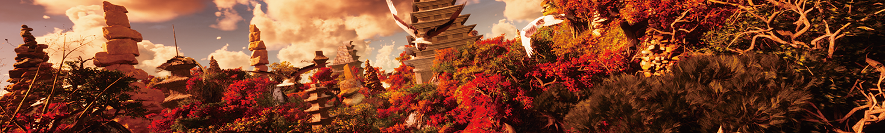
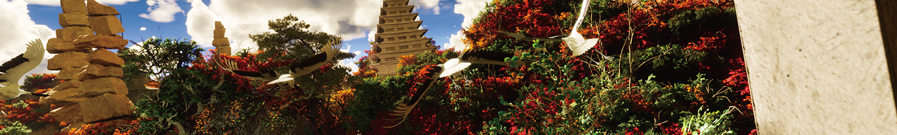
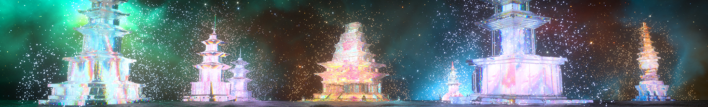
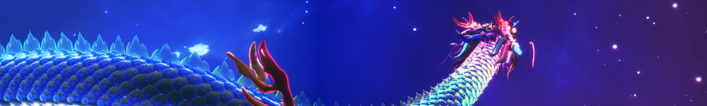
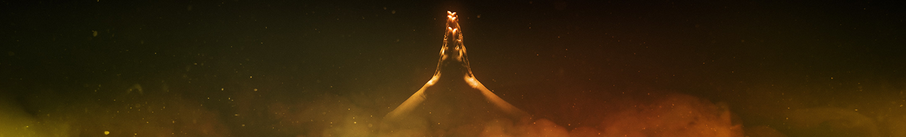

탑의 나라, 소망을 쌓다
2022. 09. 03 ~ 22. 10. 03미륵사지 미디어파사드 스크린








바로가기
작품설명
스토리보드
관련소식
기간
09월 03일부터 10월 03일까지
장소
미륵사지 미디어파사드스크린
상영시간
19:30~19:40
1회차
20:00~20:10
2회차
20:30~20:40
3회차
21:00~21:10
4회차
감독・연출
하준수
영상디자인
노기찬
3D/fx제작
문승진, 여현수, 이민우, 김건훈
2D
오은지
사운드
김동명
미디어서버
권오철
쇼컨트롤
최영화
작품설명
스토리보드
1. 세상의 모든 탑

1,000년 소망의 역사를 보여주기 위해 익산 미륵사지 석탑을 모든 석탑의 비조 鼻祖, 탑 중의 탑으로 정의하고 소소한 소망의 상징 돌탑으로부터 정림사지 석탑, 다보탑, 석가탑, 원각사지 석탑 등 한국의 대표 탑 문화재를 찬란한 빛으로 표현
2. 돌, 생명을 싹틔우다
3. 빛으로 빚은 소망

영속적 물성의 단단한 석탑과 순간적 비물성의 투명한 빛이 만나 공간의 역사성에 시간 예술인 미디어아트만의 강점인 환상성을 더해 역사 헤리티지가 아트 콘텐츠로 전환되는 지성적-감성적 엔터테인먼트의 경험을 극대화
4. 정반합정반합정반합
관련 소식